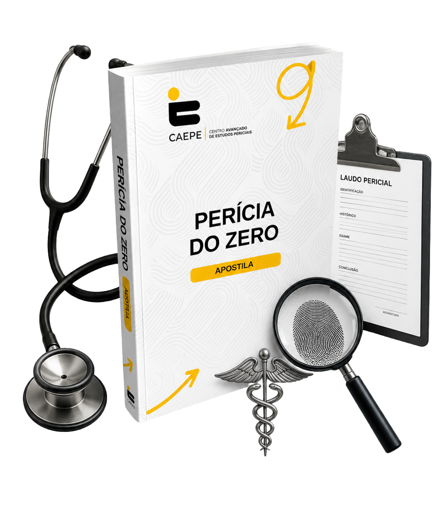
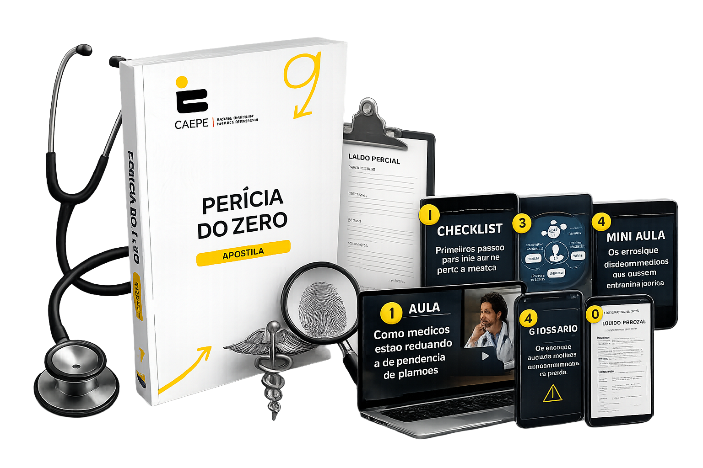
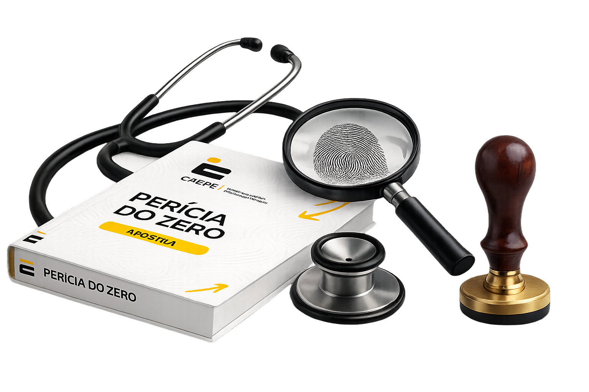
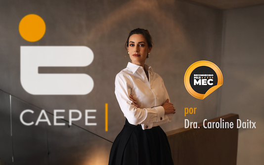

CAEPE — Centro Avançado de Estudos Periciais
Novo guia prático para médicos
Como começar uma nova atuação médica sem abandonar a medicina — e recuperar o controle da sua agenda.

Eu achava que perícia médica era algo extremamente distante da minha realidade. O manual me mostrou um caminho muito mais claro e possível.
Ricardo M.
Clínico Geral
A sensação que eu tive foi de finalmente visualizar uma saída da rotina de plantão sem precisar abandonar a medicina.
Fernanda A.
Médica Intensivista
Material extremamente direto. Sem enrolação, sem promessa absurda. Só clareza sobre como funciona a área.
Eduardo L.
Ortopedista
Depois que comecei a entender a perícia médica, percebi que o problema nunca foi a medicina. Era o modelo de vida que eu estava vivendo.
Camila R.
Cardiologista
O que mais me chamou atenção foi entender que existe uma atuação mais técnica, organizada e com muito mais autonomia.
Felipe S.
Médico do Trabalho
Pela primeira vez em muito tempo eu senti que talvez exista uma forma mais inteligente de continuar vivendo da medicina.
Juliana T.
Pediatra
No fundo, você não quer abandonar a medicina.
Você só não quer continuar vivendo assim pelos próximos 20 anos.
Cada vez mais médicos estão descobrindo a perícia médica como uma atuação com mais autonomia, flexibilidade e controle da agenda.
O Manual da Perícia do Zero foi criado para mostrar esse caminho de forma clara, prática e estruturada.
Descubra os modelos de atuação, tipos de perícia e como médicos estão entrando nessa área.
Aprenda os primeiros passos, cadastros, caminhos de formação e estrutura necessária.
Entenda como a perícia pode reduzir a dependência de plantões e trazer mais autonomia.
Recupere o controle da sua agenda sem precisar abandonar a medicina.
Estão cansados da rotina de plantão
Querem mais autonomia profissional sem abandonar a medicina
Desejam recuperar o controle da própria agenda
Buscam uma atuação menos desgastante e mais estratégica
Querem entender a perícia médica de forma clara e prática
Procuram uma transição mais inteligente dentro da medicina
Sentem que ganhar bem já não compensa viver sem tempo
Manual da Perícia do Zero
Guia completo e estruturado para entender e iniciar na perícia médica
R$97
INCLUSO
Aula: Como médicos estão reduzindo a dependência de plantões
Estratégias práticas com casos reais
R$47
INCLUSO
Checklist: Primeiros passos para iniciar na perícia médica
Roteiro passo a passo para não perder nenhuma etapa
R$27
INCLUSO
Mapa visual das áreas de atuação da perícia médica
Visão completa de todas as frentes onde você pode atuar
R$37
INCLUSO
Mini aula: Os erros que atrasam médicos que querem entrar na perícia
Evite as armadilhas mais comuns da transição
R$47
INCLUSO
Glossário da perícia médica
Terminologia essencial para dominar a linguagem da área
R$27
INCLUSO
Modelo simples de laudo comentado
Referência prática para entender como funciona na prática
R$57
INCLUSO

Tudo isso custaria
De R$ 339,00
Mas hoje você acessa por apenas
8x de R$ 9,70
ou R$ 67,00 à vista
QUERO MEU ACESSO AGORA🔒 Pagamento 100% seguro · Cartão ou Pix

Até quando você pretende continuar vivendo sem controle da própria agenda?
Porque a verdade é que:
Talvez você não precise abandonar a medicina.
Talvez só precise conhecer uma forma mais inteligente de continuar nela.
Comece agora a descobrir uma forma mais inteligente de continuar vivendo da medicina.

Criadora do Manual
CRM-SP 194.404 · RQE 94.143 (Medicina Legal) · RQE 90.896 (Medicina do Tráfego)
Médica especialista em Medicina Legal e Perícia Médica pela USP, com pós-graduações em Medicina do Trabalho, Gestão da Qualidade e Segurança do Paciente. Atuou como médica legista, perita previdenciária, médica do SAMU e perita nomeada por Tribunais Regionais Federais.
Foi Diretora Científica da Associação de Médicos Legistas do Paraná. É professora, palestrante, autora do livro Alma da Perícia, doutoranda pela USP Ribeirão Preto e fundadora do CAEPE — Centro Avançado de Estudos Periciais.
Sua atuação já foi destaque na série Perícia Lab (AXN/Sony) e em comentários técnicos para a imprensa em casos periciais complexos.
Tudo isso custaria
De R$ 339,00
Mas hoje você acessa por apenas
8x de R$ 9,70
ou R$ 67,00 à vista
QUERO MEU ACESSO AGORATalvez essa seja a primeira decisão para recuperar o controle da sua agenda.
Não. O Manual foi criado justamente para médicos que desejam entender a área e começar do zero. Toda a linguagem e estrutura foram pensadas para quem nunca teve contato com a perícia médica.
Sim. A perícia médica pode ser exercida por médicos de diferentes áreas e especialidades. Você não precisa ser especialista em medicina legal para começar a entender e a atuar na área.
Não. A proposta do Manual é mostrar uma possibilidade de transição gradual e mais estratégica dentro da medicina. Você pode começar na perícia sem abandonar sua atuação atual.
O acesso é enviado imediatamente após a confirmação da compra, diretamente no seu e-mail. Em poucos minutos você já poderá acessar todo o conteúdo.
Sim. Você poderá acessar o conteúdo quando e quantas vezes quiser. Não existe prazo de expiração — o acesso é permanente.
Sim. Você terá 7 dias de garantia para acessar o material e decidir com tranquilidade. Caso não fique satisfeito, devolvemos 100% do seu investimento sem nenhuma burocracia.
8x de R$
9,70